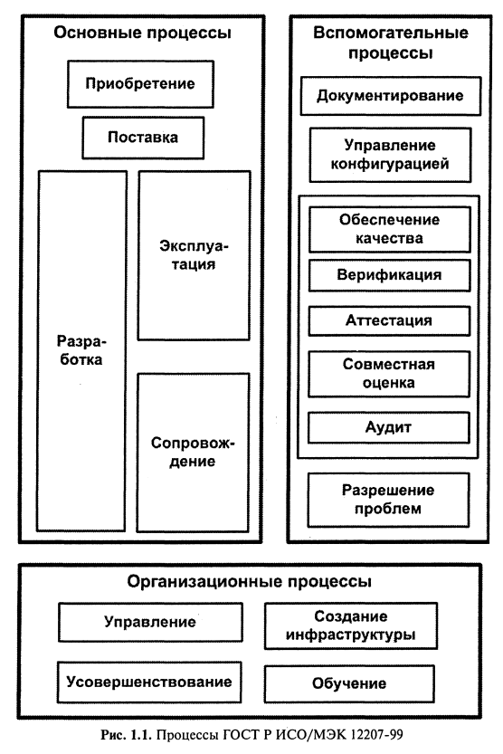

ЖЦПО определяется как период времени, который начинается с момента принятия решения о необходимости создания ПО и заканчивается в момент его полного изъятия из эксплуатации.
Модель ЖЦ ПО включает в себя:
Стадия — часть процесса создания ПО, ограниченная определёнными временными рамками и заканчивающаяся выпуском конкретного продукта (моделей, программных компонентов, документации), определяемого заданными для данной стадии требованиями.
Жизненный цикл разработки состоит из:
Сбор и анализ требований (Planning and Requirement Analysis)
самый ответственный и важный из всех шагов к созданию успешной программной системы. Вся собранная информация используется для планирования базового проектного подхода.
Дополнительно идет планирование требований по обеспечению качества и выявления различных рисков, связанных с проектом. Результатом анализа является определение различных технических подходов, которые можно использовать для успешной реализации проекта с минимальными рисками.
Документирование требований (Defining Requirements)
Как только базовый анализ требований будет выполнен, следующим шагом будет четкое определение и документирование требований к продукту, утверждение со стороны клиента. Если одной из целей первого этапа является понимание и анализ требований, то на этом этапе все цели должны быть прописаны, это защита обеих сторон.
Дизайн (Design the Product Architecture)
SRS это ориентир для разработчиков, чтобы предложить лучшую архитектуру для продукта. Обычно предлагается несколько подходов к проектированию архитектуры продукта. Все предложенные подходы документируются в спецификации DDS (Design Document Specification) и выбирается наилучший подход к проектированию.
Разработка ПО (Building or Developing the Product)
Здесь начинается разработка и сборка продукта. Весь программный код, новые модули и фичи разрабатываются на основании DDS. Чем лучше написана эта документация, тем быстрее будет идти имплементация.
Тестирование (Testing the Product)
Именно тестирование, в основном, затрагивает все этапы жизненного цикла. Дефекты продукта регистрируются, отслеживаются, исправляются и повторно тестируются. Это происходит до тех пор, пока продукт не достигнет стандартов качества, которые прописаны в SRS. На данном этапе в процесс разработки подключается команда мануальных тестировщиков или автоматизаторы.
Внедрение и поддержка продукта (Deployment in the Market and Maintenance)
Как только продукт протестирован, он выходит в релиз. Иногда внедрение происходит поэтапно, в соответствии с бизнес-стратегией. Продукт сначала может быть выпущен в ограниченном сегменте и протестирован в реальной бизнес-среде, это UAT-тестирование (User Acceptance Testing). Затем, основываясь на отзывах, продукт может быть выпущен как есть, или с предлагаемыми улучшениями. После того, как продукт выпущен на рынок его обслуживание выполняется для существующей клиентской базы, и на этом этапе подключаются Support-команды.
Основным нормативным документом, регламентирующим состав процессов ЖЦ ПО, является международный стандарт ISO/IEC 12207: 1995 «Information Technology - Software Life Cycle Processes».
Он определяет структуру ЖЦ, содержащую процессы, действия и задачи, которые должны быть выполнены во время создания ПО (его российский аналог ГОСТ Р ИСО/МЭК 12207-99 введен в действие в июле 2000 г).
В данном стандарте процесс определяется как совокупность взаимосвязанных действий, преобразующих некоторые входные данные в выходные.
Каждый процесс характеризуется определенными задачами и методами их решения, исходными данными, полученными от других процессов, и результатами. Каждый процесс разделен на набор действий, каждое действие — на набор задач.
Каждый процесс, действие или задача инициируется и выполняется другим процессом по мере необходимости, причем не существует заранее определенных последовательностей выполнения (естественно, при сохранении связей по входным данным).
